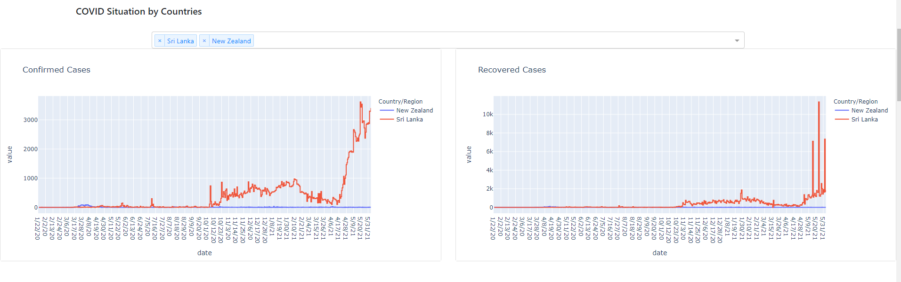
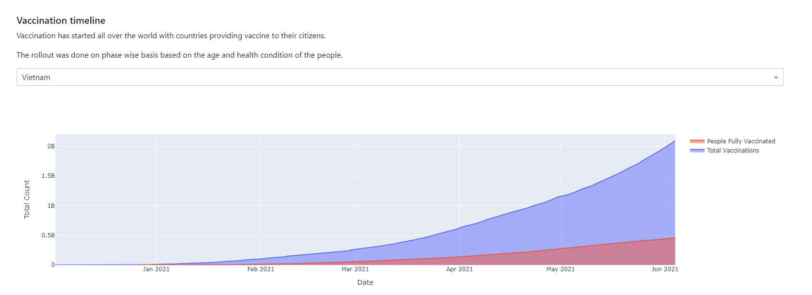
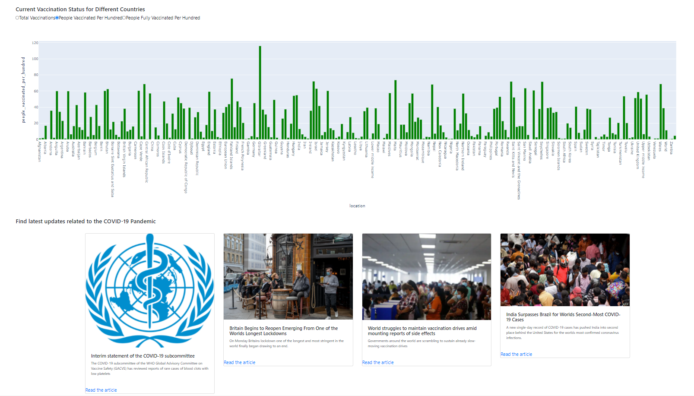

English to French Translator
This was my first major Data Analytics Project, and it was tailored to suit the current situation on Earth(2020/2021).
The Live Covid 19 Dashboard brings a wide variety of information to your finger tips. The best part is that the information is well upto date.
This Project is a Real time Analytics Dashboard of Time-series Data.
Live Data is obtained from the COVID-19 Data Repository by the Center for Systems Science and Engineering (CSSE) at Johns Hopkins University.
The project can be found at my Github repo: Englih_to_French_Translator.
Technologies:
- - Python 3
- - Tensorflow 2
- - Keras
- - Librosa
- - Seaborn
Confirmed and Recovered Cases by Countries

Live Data Table

The World Map showing the Spread

Vaccination Timeline

Vaccination Status along with Latest News
